どんな動画か
介護・看護のお仕事で体を酷使している方へ。「痛いところだけを見る」これまでのケアではなく、全身を“整える”という別の選択肢があることを伝える動画です。
どう作ったか
| 流れ | シーン | 内容 |
|---|---|---|
| A 悩み | 01〜03 | 前かがみ・夜勤明け・揉んでも戻る、という毎日の悩みから始めます。 |
| B 整える | 04〜06 | 「“整える”という選択肢」を出し、画面を左右に割って「これまで」と「repos」の違いを見せます。 |
| C 施術 | 07〜09 | いただいた施術動画から、全身のつながりを見ている場面を使っています。 |
| D 未来 | 10〜12 | 介護・看護の方が笑顔で働く・歩く未来を見せ、「あきらめない毎日へ。」で締めます。 |
| E 人・場所 | 13〜17 | お客様の声（Googleのクチコミを要約）、先生が日常のケアを教える様子、施術室、駅からの道順。 |
| F 行動 | 18 | 白く明るくなって、屋号・電話・QRのエンドカードへ。 |
- テロップは太めのゴシック体で、はっきり読める白い文字にしています。大事な一言（12「あきらめない毎日へ。」）だけ大きく、色を変えています。
- BGMは、やさしく落ち着いたピアノの曲です。
- 駅からの道順は、駅 → 商店街 → 建物 と歩いて向かう流れを早送りでつなぎ、最後は白く明るくなって予約の案内へ移ります。
- 広告のルールに合わせて、症状の名前や効果を言い切る表現は使わず、必要な場面に注記を入れています。
シーンごとの画面

010.0〜1.5秒
毎日、
前かがみ。
前かがみ。
素材：AIで作ったイメージ映像
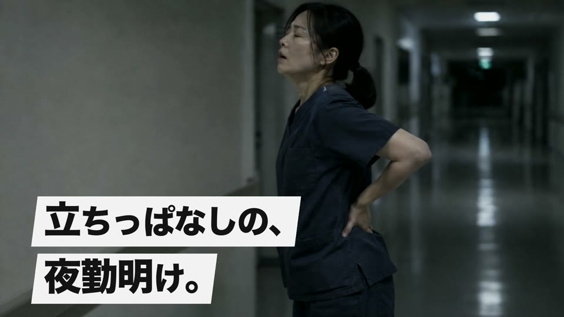
021.5〜3.0秒
立ちっぱなしの、
夜勤明け。
夜勤明け。
素材：AIで作ったイメージ映像
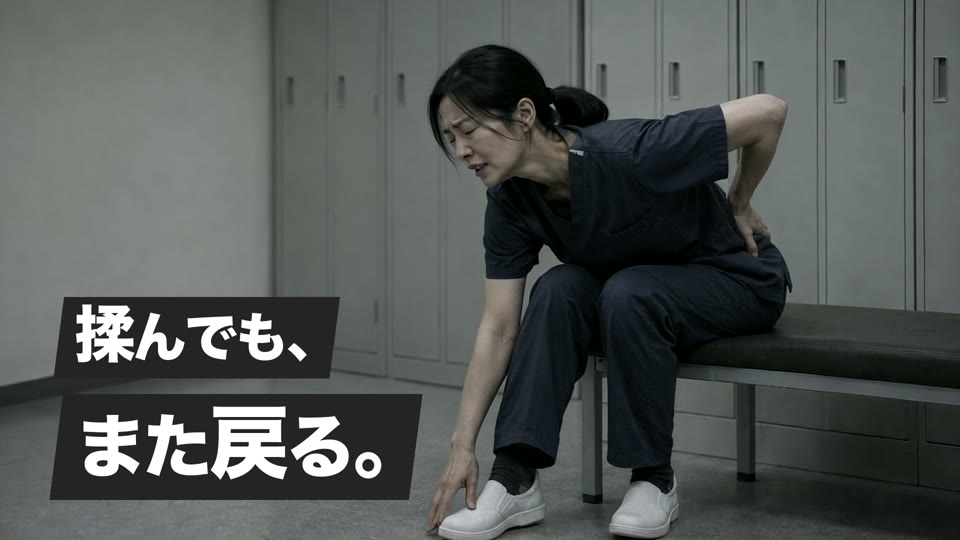
033.0〜4.5秒
揉んでも、
また戻る。
また戻る。
素材：AIで作ったイメージ映像
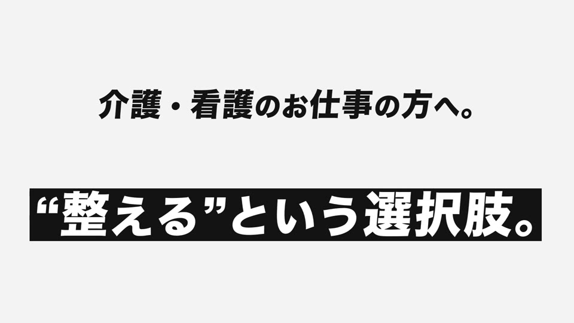
044.5〜6.5秒
介護・看護のお仕事の方へ。
【“整える”という選択肢。】
【“整える”という選択肢。】
素材：文字のみ
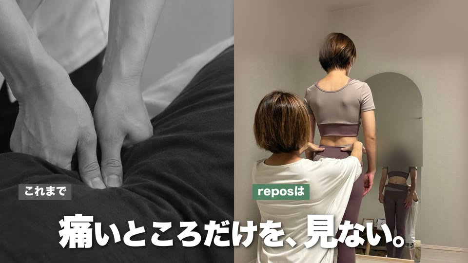
056.5〜8.5秒
痛いところだけを、見ない。
素材：左：AIで作ったイメージ（これまでのケア）／右：いただいた姿勢チェックのお写真（吹き出しの文字は消しています）
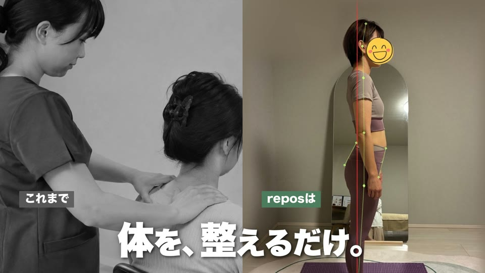
068.5〜10.5秒
体を、整えるだけ。
素材：左：AIで作ったイメージ／右：いただいた姿勢チェックのお写真
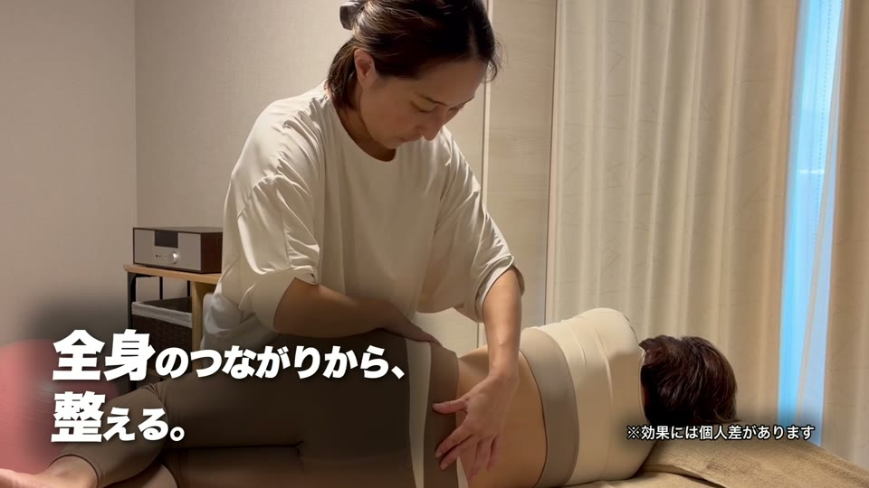
0710.5〜12.5秒
全身のつながりから、
整える。
整える。
注記：※効果には個人差があります
素材：いただいた施術動画
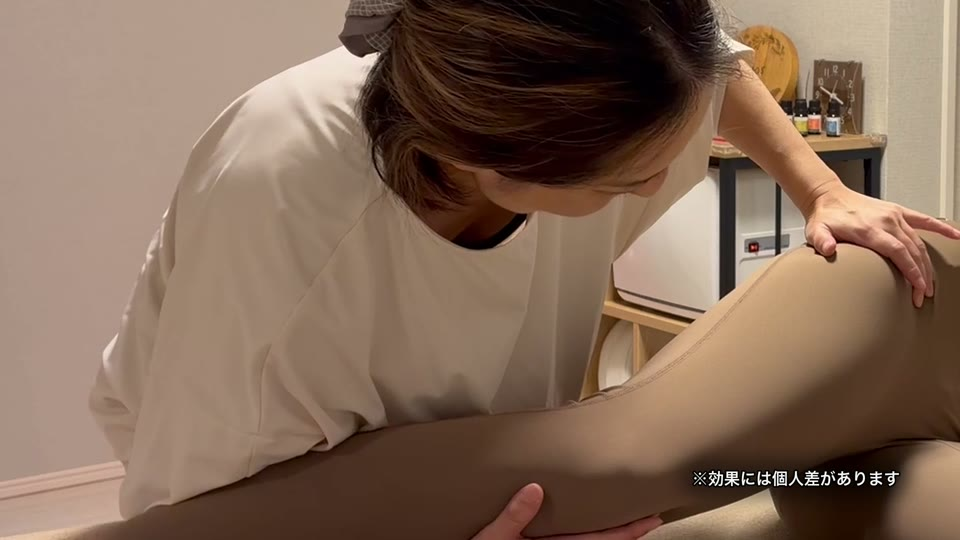
0812.5〜14.0秒
（テロップなし）
注記：※効果には個人差があります
素材：いただいた施術動画（2分10秒あたり）
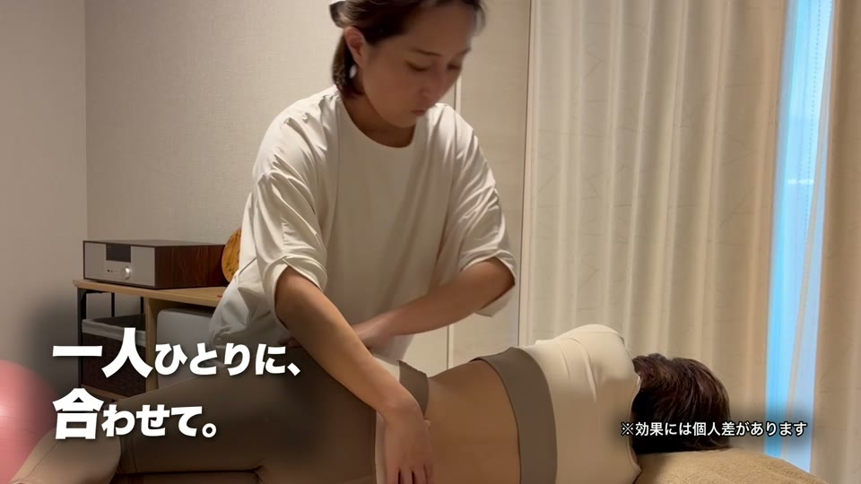
0914.0〜16.0秒
一人ひとりに、
合わせて。
合わせて。
注記：※効果には個人差があります
素材：いただいた施術動画
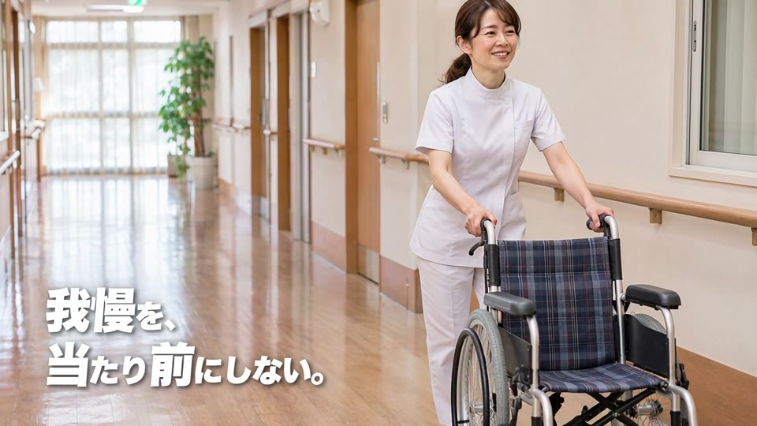
1016.0〜18.0秒
我慢を、
当たり前にしない。
当たり前にしない。
素材：AIで作ったイメージ映像
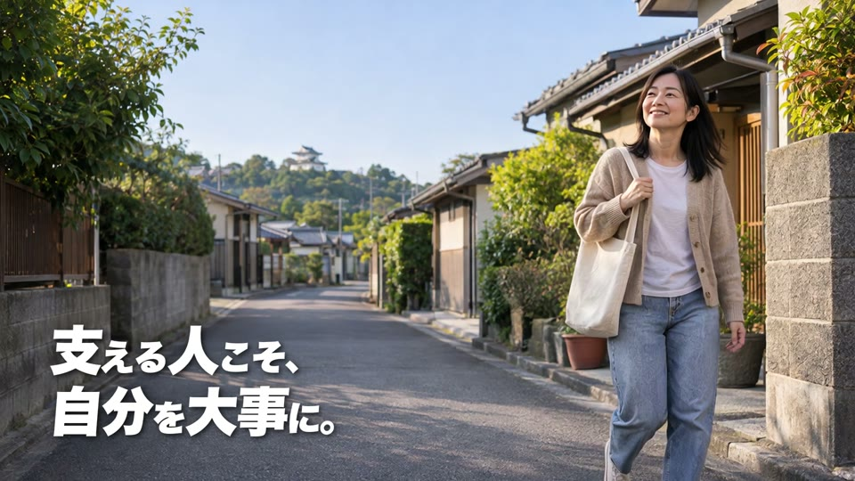
1118.0〜20.0秒
支える人こそ、
自分を大事に。
自分を大事に。
素材：AIで作ったイメージ映像
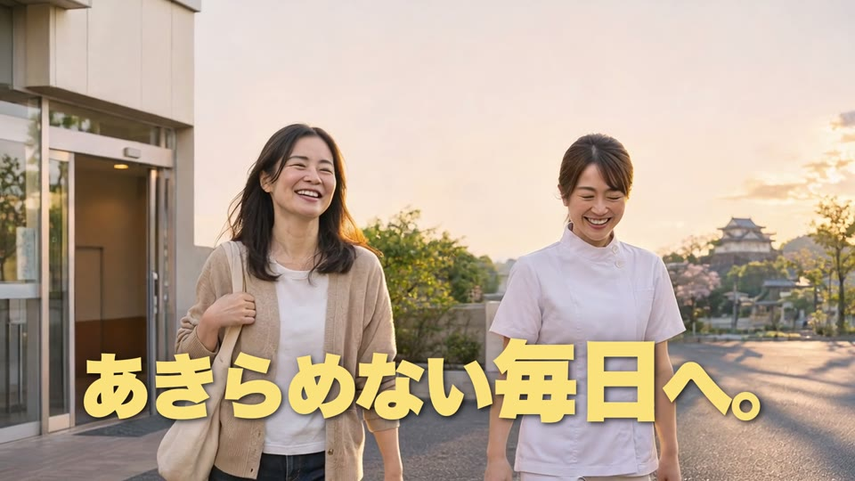
1220.0〜23.0秒
あきらめない毎日へ。
素材：AIで作ったイメージ映像
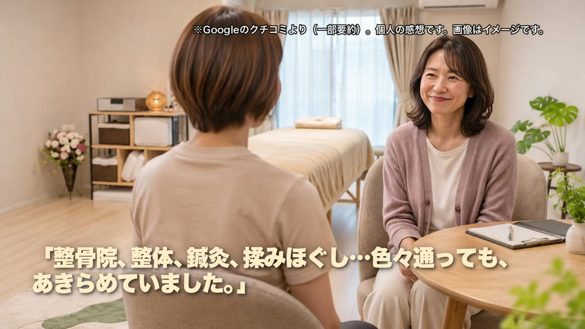
1323.0〜26.5秒
「整骨院、整体、鍼灸、揉みほぐし…色々通っても、
あきらめていました。」
あきらめていました。」
注記：※Googleのクチコミより（一部要約）。個人の感想です。画像はイメージです。
素材：AIで作ったイメージ映像（お客様と先生・イメージ）
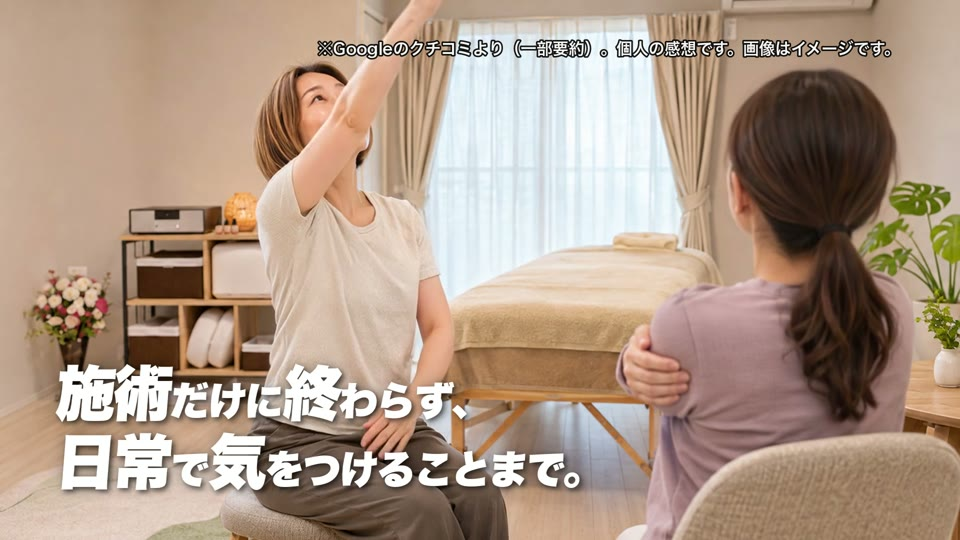
1426.5〜28.5秒
施術だけに終わらず、
日常で気をつけることまで。
日常で気をつけることまで。
注記：※Googleのクチコミより（一部要約）。個人の感想です。画像はイメージです。
素材：インスタのお写真を参考に、AIで作ったイメージ映像（先生が教える様子）
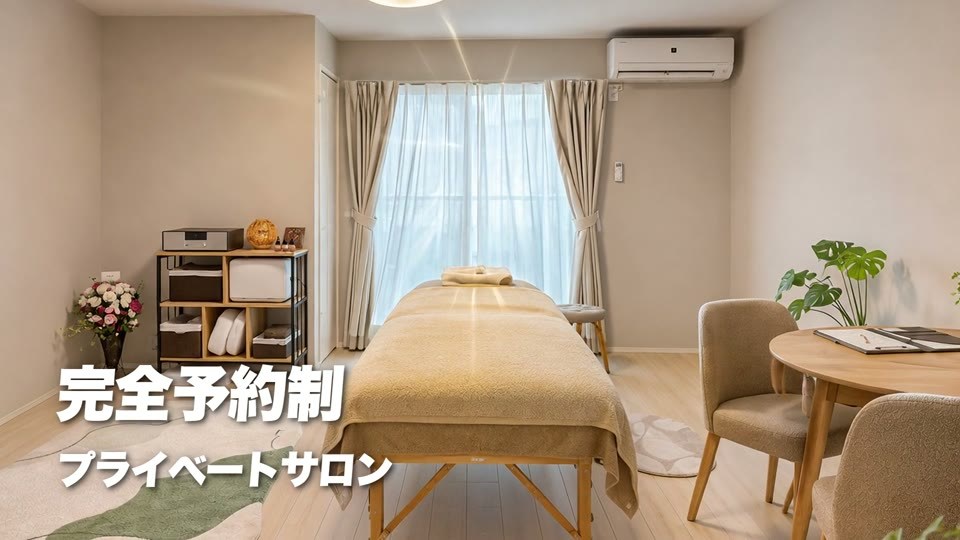
1528.5〜30.0秒
完全予約制
プライベートサロン
プライベートサロン
素材：いただいたお部屋のお写真を参考に、AIで作ったイメージ映像
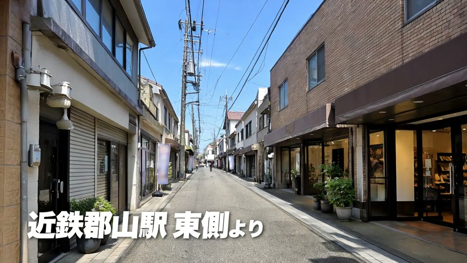
1630.0〜32.0秒
近鉄郡山駅 東側より
素材：駅から歩いて向かう道順の映像
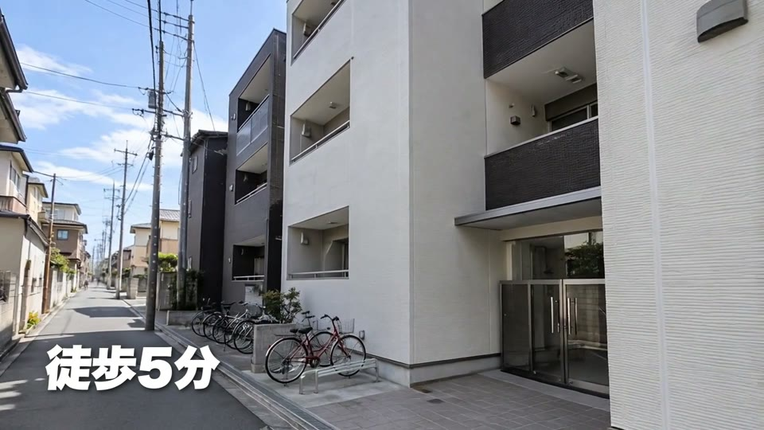
1732.0〜34.0秒
徒歩5分
素材：道順の映像 → 白く明るくなる
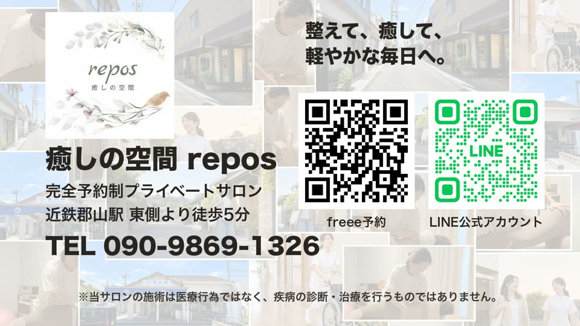
1834.0〜39.0秒
整えて、癒して、
軽やかな毎日へ。＋エンドカード（屋号・駅から徒歩5分・電話・予約（freee）とLINEのQR・注記）
軽やかな毎日へ。＋エンドカード（屋号・駅から徒歩5分・電話・予約（freee）とLINEのQR・注記）
素材：エンドカード
台本（テロップの文章）
| No. | 秒 | テロップ | 画面の注記 |
|---|---|---|---|
| 01 | 0.0〜1.5 | 毎日、 前かがみ。 | |
| 02 | 1.5〜3.0 | 立ちっぱなしの、 夜勤明け。 | |
| 03 | 3.0〜4.5 | 揉んでも、 また戻る。 | |
| 04 | 4.5〜6.5 | 介護・看護のお仕事の方へ。 【“整える”という選択肢。】 | |
| 05 | 6.5〜8.5 | 痛いところだけを、見ない。 | |
| 06 | 8.5〜10.5 | 体を、整えるだけ。 | |
| 07 | 10.5〜12.5 | 全身のつながりから、 整える。 | ※効果には個人差があります |
| 08 | 12.5〜14.0 | （テロップなし） | ※効果には個人差があります |
| 09 | 14.0〜16.0 | 一人ひとりに、 合わせて。 | ※効果には個人差があります |
| 10 | 16.0〜18.0 | 我慢を、 当たり前にしない。 | |
| 11 | 18.0〜20.0 | 支える人こそ、 自分を大事に。 | |
| 12 | 20.0〜23.0 | あきらめない毎日へ。 | |
| 13 | 23.0〜26.5 | 「整骨院、整体、鍼灸、揉みほぐし…色々通っても、 あきらめていました。」 | ※Googleのクチコミより（一部要約）。個人の感想です。画像はイメージです。 |
| 14 | 26.5〜28.5 | 施術だけに終わらず、 日常で気をつけることまで。 | ※Googleのクチコミより（一部要約）。個人の感想です。画像はイメージです。 |
| 15 | 28.5〜30.0 | 完全予約制 プライベートサロン | |
| 16 | 30.0〜32.0 | 近鉄郡山駅 東側より | |
| 17 | 32.0〜34.0 | 徒歩5分 | |
| 18 | 34.0〜39.0 | 整えて、癒して、 軽やかな毎日へ。＋エンドカード（屋号・駅から徒歩5分・電話・予約（freee）とLINEのQR・注記） |
差し替えできるもの・ご確認いただきたいこと
- 先生・お客様・介護や看護の方は、AIで作ったイメージです。実際の先生やお客様の写真・動画をいただければ、差し替えます（先生に似せたイメージ映像を使ってよいかも教えてください）。
- 施術の場面（07〜09）は、いただいた動画から使っています。ほかに見せたい手技があれば、10秒ほどの動画をお送りください（スマホ・横向きで大丈夫です）。
- 「整骨院、整体、鍼灸、揉みほぐし…」のお客様の声は、Googleのクチコミを短くまとめたものです。この使い方で問題ないか教えてください。
お願い
動画をご覧いただき、気になるところを教えてください。
- 差し替えたい場面がありましたら、実際の施術の動画やお写真をお送りいただけますと幸いです（スマホ・横向きで大丈夫です）。
- 「ここはこう伝えたい」「この場面はこうした方がいい」といったご指示も、ぜひお聞かせください。言い回し・順番・色・音楽など、どんなことでも大丈夫です。
いただいた内容をもとに、仕上げてまいります。どうぞよろしくお願いいたします。